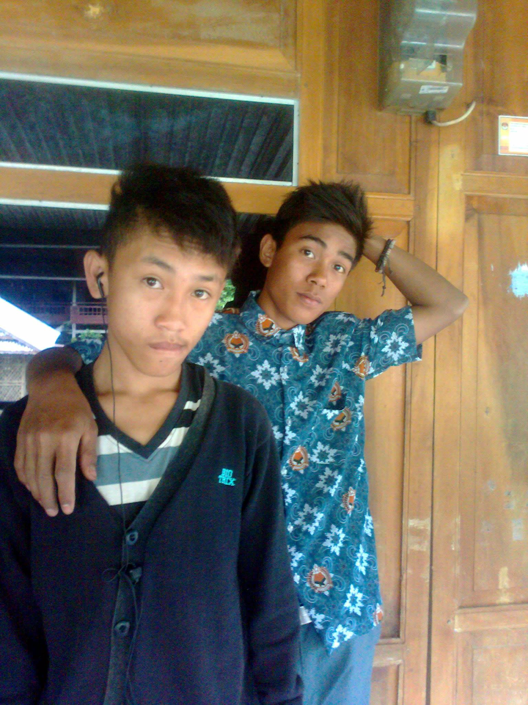
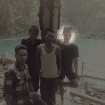
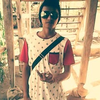
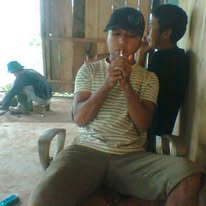
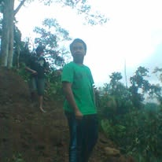
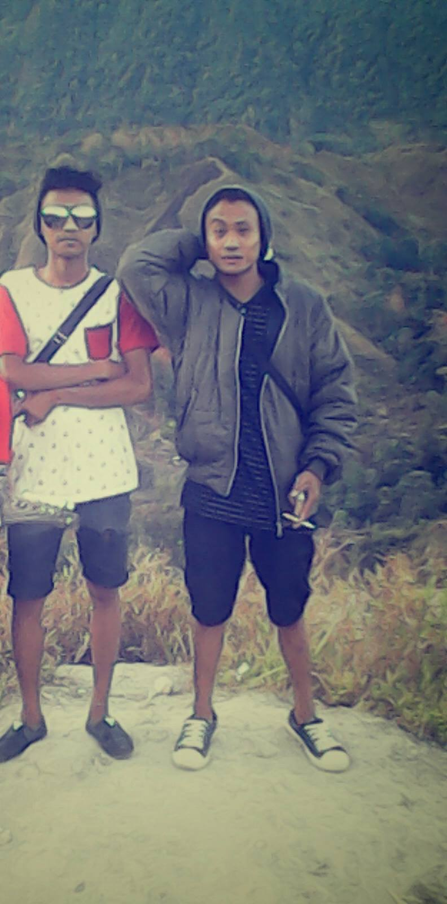

×

Judul Foto
Deskripsi momen kenangan.
Sebuah Dokumen Visual & Ruang Nostalgia Para Sahabat Kampung Halaman

Momen sore hari saat kita semua rela kulit gosong demi mengejar layangan putus di area persawahan.

Modal kopi satu gelas plastik untuk bertiga dan gitar tua, kita bisa tertawa sampai menjelang subuh.

Meskipun sebagian sudah merantau dan berkeluarga, lebaran selalu berhasil menyatukan kita kembali.

Sensasi melompat dari pohon tua langsung ke dalam air sungai yang jernih. Masa-masa paling bebas tanpa beban.

Kemenangan dramatis tim kampung kita lewat adu penalti. Perayaan juara paling heboh sepanjang sejarah.

Rambut mulai menipis, obrolan mulai berubah soal pekerjaan, tapi candaan konyolnya tetap persis sama.
Deskripsi momen kenangan.